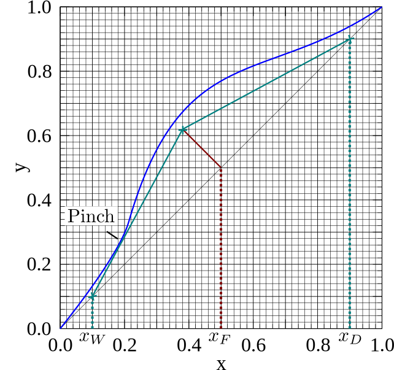
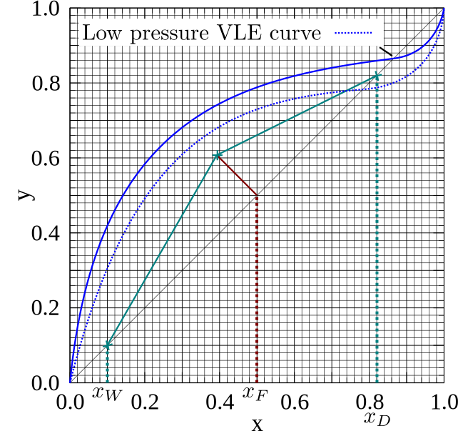
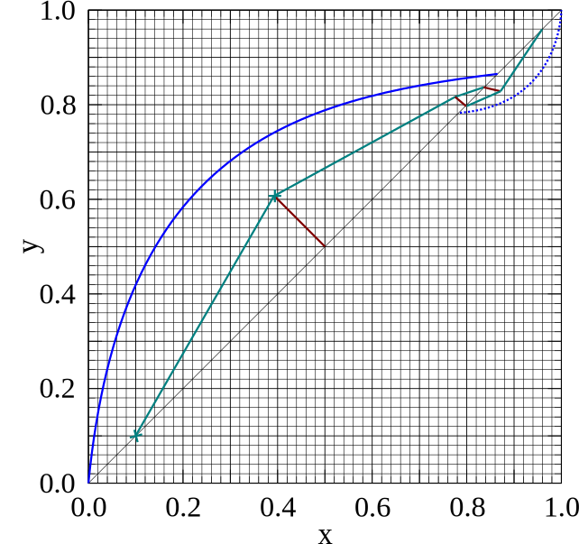

Multi-Stage Distillation: Part 04
- When designing a distillation column from scratch, the only design specifications we will have are the feed and outlet concentrations.
- We will need to decide upon a column operating pressure and use this to calculate the $q$ -value of the feed stream (see the last lecture's slides).
- We will also need to choose a reflux ratio.
- Selecting the reflux ratio and the column operating pressure requires examining the economic trade-off between capital and operating costs.
- The column operating pressure will require a full optimisation study. However, we can make some educated estimates when it comes to the reflux ratio …

- To understand the values of the reflux ratio, we need to understand its limits and what they physically correspond to. \begin{align*} R&=\frac{L_{n}}{D} \end{align*}
- The first limit to consider is when we have the maximum reflux ratio $R\to\infty$.
- This condition is known as total reflux, and occurs when no distillate is collected ( $D=0$), but all rising vapour is refluxed back down the column ( $L_{N+1}=V_N$).
- But what effect does this have on the column design?
- The intercept of the enrichment operating line with the $y$ -axis ( $x=0$) goes to zero! \begin{align*} y(x=0)=\lim_{R\to\infty}\left(\frac{x_D}{R+1}\right)=0 \end{align*}


- We cannot actually operate at a total reflux ratio.
- Without producing any distillate, if any feed is added it must leave in the bottoms product.
- What goes in, must come out, so we achieve nothing in this case.
- However, we can use this to estimate the minimum number of trays needed for a given separation!
- Also, during the start-up of a column, it is operated under total reflux until sufficient column vapour and liquid flow-rates have been obtained.
- Thus total reflux helps us understand what is achievable, and is industrially relevant during plant startup.
- Just as we had a maximum reflux ratio, we can also have a minimum reflux ratio.
- The reflux ratio should not reach zero, as some liquid must be returned to the column to allow a multi-stage separation to take place. For $R=0$, we will have only one (partial reboiler) or zero (total reboiler) stages.
- So what actually is the minimum (but non-zero) reflux ratio to perform a distillation at?
- Lets consider a distillation of an equimolar ($x_F=0.5$) Benzene-Toluene feed stream which, upon entering the column, flashes to equal amounts of vapour and liquid ( $q=0.5$).
- If the top and bottoms product have concentrations of 90% ($x_D=0.9$) and 10% ( $x_W=0.1$) benzene respectively, what is the minimum possible reflux ratio?


- The minimum reflux ratio corresponds to the first (highest) $R$ where a pinch is formed.
- We can then just read off the $y$ -intercept of the enrichment operating line to find the minimum reflux ratio. \begin{align*} R_{min}=\frac{x_D}{y(x=0)}-1 \end{align*}
- The optimum reflux ratio (see C&R vol. 2, pg. 575 for details) is generally around 1.1–1.5 times the minimum reflux ratio.
- This is where the running costs of the column (heating steam for the boiler, cooling water for the condenser, pumps) roughly balance with the capital costs of the column (number of trays, cost of reboiler and condenser).
- So we can now calculate a rough reflux ratio, given just the outlet conditions and the $q$ value! We can design binary distillation columns…
- Pinches don't just appear at the intersection of the $q$ -line, VLE line, and the operating line.
- If the fluid is a non-ideal mixture, the pinch can occur at some other point along the enrichment operating line and the VLE line.
- A pinch can also occur somewhere along the stripping operating line and the VLE line.
- Lets take a look at two examples…

- There is a particular form of pinch which cannot be overcome by changing the reflux ratio.
- This type of pinch was introduced to you in EG3029 Chemical Thermodynamics, and is called an azeotrope.
- The most famous azeotrope exists in Ethanol-Water mixtures, and prevents the distillation of more than 95.6% at atmospheric pressure.
- We cannot place the top and bottoms product concentrations on different sides of the azeotrope, and enrichment beyond the azeotrope concentration in a single column is impossible.


- The next subject on distillation design is plate efficiencies.
- So far we've only concerned ourselves with an overall plate efficiency, $E_O$.
- We can convert from theoretical stages ($N$) to real stages ( $N_{real}$) by just dividing by the efficiency. \begin{align*} N_{real} = N / E_O \end{align*}
- There are expressions for the overall efficiency available in the literature for certain types of distillations (See C&R Vol. 2, Eq. 11.126).
- However, in general an overall efficiency is a very crude approximation and can only be used for rough calculations.
- But there are better definitions of the efficiency available…
- The Murphree Tray Efficiency is a parameter that appears to fit reality a little better.
- The expression for the Murphree tray efficiency is \begin{align*} E_M = \frac{y_n-y_{n-1}}{y_{n}^{*}-y_{n-1}} \end{align*} where $y_n$ is the real concentration of vapour coming off a stage, and $y_{n}^{*}$ is the equilibrium vapour concentration.
- If the tray efficiency is one, these two values are the same. At efficiencies less than one, the outlet vapour will not reach equilibrium with the average tray concentration.
- The easiest way to use such an efficiency is to plot it as a second, curved Murphree line on the almost complete McCabe-Thiele chart.

- We can extend the Murphree tray efficiency to the Murphree point efficiency.
- The expression for the Murphree point efficiency is \begin{align*} E_P = \frac{y'_p-y'_{n-1}}{y_{n}^{*}-y'_{n-1}} \end{align*} where the primes denote the concentration at a certain point on the plate.
- This is used to take into account that the concentration varies along the plate as the tray fluid is not well mixed.
- Use of this efficiency requires us to consider the hydrodynamics within a plate, and this is too detailed for this course.
- But, as always, you need to be aware of the approximations of your solutions.